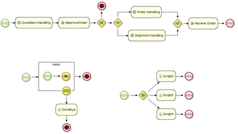

jBPM5 and BPMN 2.0
What is BPMN 2.0?
“The primary goal of BPMN is to provide a notation that is readily understandable by all business users, from the business analysts that create the initial drafts of the processes, to the technical developers responsible for implementing the technology that will perform those processes, and finally, to the business people who will manage and monitor those processes.“
For example, a very simple process that would write out “Hello World” when it is started would look something like this (both visual and using XML):
<definitions ... >
<process id="com.sample.bpmn.hello" name="Hello World">
<startevent id="_1" name="StartProcess">
<sequenceflow sourceref="_1" targetref="_2">
<scripttask id="_2" name="Hello">
<script>System.out.println("Hello World");</script>
</scripttask>
<sequenceflow sourceref="_2" targetref="_3">
<endevent id="_3" name="EndProcess">
</process>
</definitions>
The BPMN2 specification contains an explanation of how to represent executable business processes, both visually and syntactically, by combining a large set of different node types (and related elements). jBPM5 supports most of the “Common Executable” subset of the BPMN2 specification (containing the most common node types and attributes for specifying executable business processes) and already a few more node types. The documentation gives a detailed overview of which elements an attributes exactly.
To get started, the BPMN2 specification obviously serves as the reference, but additional to that, the jbpm-bpmn2 module contains a lot of junit tests for each of the currently supported node types. These test processes can also serve as simple examples: they don’t really represent an entire real life business processes but can definitely be used to show how specific features can be used. For example, the following figures shows the flow chart of a few of those examples. The entire list can be found here.

Want to know more details, check out the BPMN2 chapter in the jBPM5 documentation.

{kind=link}
{kind=link}